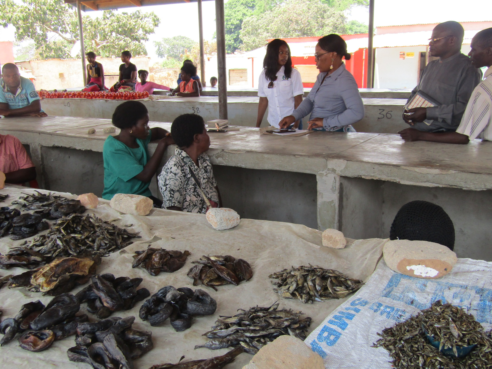

Community Development Section Is the section of the planning department which is mandated to implement Community based programs in order to enhance
community development and participation of the community in matters affecting them

KEY FUNCTIONS
- 1) In charge of smooth running of markets in the District.
- By forming Markets committees that oversees all activities, happening in the market.
- Controlling order inside the market among traders
2) Dissemination of information to all members of the community through sensitizations
- Sensitization of community Members on new things, happening at the district.
- Taking the community through all government policies they are not aware of
- Encouraging members of the community to participate in all government activities
3) In charge of formation of Ward development committees, youth, women clubs in the district
- In charge of formation of ward Development committees.
- Spearheads all planned activities for all the wdc members
- Help the WDC prepare work plans and quarterly reports
4) Offer entrepreneurship skills in the district to community Member
- Encourage women and men to enroll for literacy classes
- Training community members in different skills.
- Offer knowledge on gender based violence.